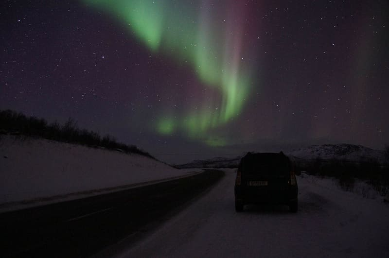
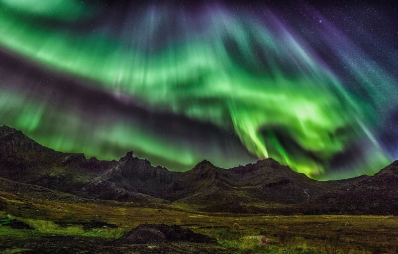
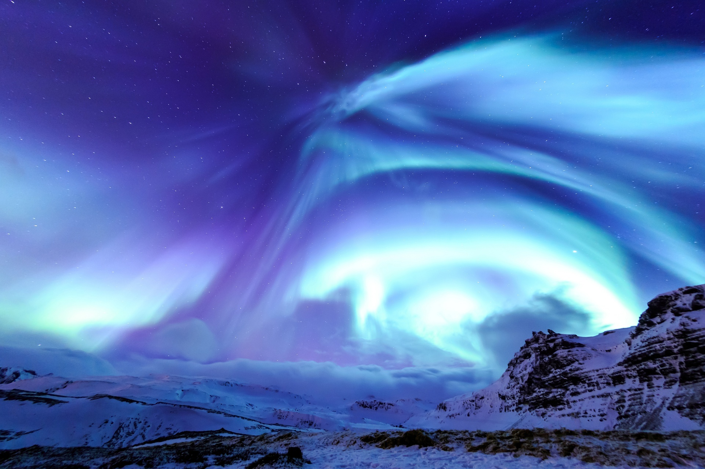
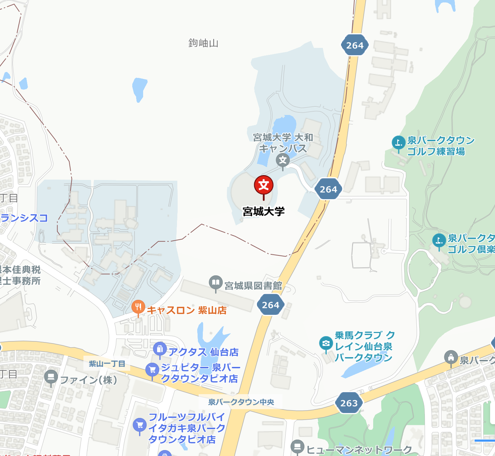

夜空に浮かぶ神秘的な光のカーテン。世界各地で観測された美しいオーロラの風景を宮城大学で一緒に鑑賞しましょう。
期間 2024年2月1日～3月1日
時間 10:00～17:00
場所 宮城大学 大和キャンパス

カーテン型
カーテンのように高さのある幕の形で何メートルにもわたって広がる一番見やすい形。 太陽風の活動が活発な時に見られる。

コロナ
カーテン型が何層にも巻き付いた形をしている。インパクトのある壮大な景色が広がる。 太陽風が最大限に活発になるときに見られるためあまり見られない。
帯
あまり波打たずに帯のような形になる。太陽風の活動が弱い時期に遠くに出るオーロラ。
赤
成分/酸素・発生高度/200～500km
酸素がエネルギーの小さいプラズマに反応すると赤色の光を出す。

青
成分/窒素・発生高度/90～120km
高度が比較的低い位置に発生する。窒素が強いプラズマにぶつかることで青の光を出す。非常に珍しい。
宮城大学 大和キャンパス
〒981-3298
宮城県黒川郡大和町学苑1番地1
TEL 022-377-8205
地下鉄泉中央駅より車で20分
JR仙台駅よりバスで1時間
